Cобственно, сам R
RStudio - среда для разработки (IDE) на R
Онлайн IDE для R — на тот случай, если у вас не установлен R:
linmodr создайте папку data,
где будут храниться все файлы с данными для анализа.В итоге у вас должно получиться примерно это:
C:\linmodr\
C:\linmodr\data\Все настройки RStudio находятся меню Tools -> Global Options
General убираем галочку
Restore .RData into workspace at startup, и меняем
Save workspace to .RData on exit - NeverCode ставим галочку рядом с опцией
Soft-wrap R source filesКомментарии в текстах программ обозначаются символом #
# это комментарии, они не будут выполнятьсяCtrl + Shift + C - закомментировать/раскомментировать
выделенный фрагмент кодаCtrl + Enter - отправляет активную строку из текстового
редактора в консоль, а если выделить несколько строк, то будет выполнен
этот фрагмент кода.Tab или Ctrl + Space - нажмите после того
как начали набирать название функции или переменной, и появится список
автоподстановки. Это помогает печатать код быстро и с меньшим
количеством ошибок.setwd и
нажать F1?setwdhelp()help("setwd")2+2## [1] 41024/2## [1] 5121:10## [1] 1 2 3 4 5 6 7 8 9 1034*4## [1] 1362^4## [1] 16sqrt(27)## [1] 5.196152Оператор присваивания это символ стрелочки <-. Он
работает справа налево, это значит, что значение выражения в его правой
части присваивается объекту в левой части.
Переменные - это такие контейнеры, в которые можно положить разные данные и даже функции.
Имена переменных могут содержать латинские буквы обоих регистров, символы точки . и подчеркивания _ , а так же цифры. Имена переменных должны начинаться с латинских букв. Создавайте понятные и “говорящие” имена переменных.
var_1 <- 1024 / 2
1238 * 3 -> var_2
var_2## [1] 3714Как выбрать название переменной?
a - плохо, и даже b, с, или
х. Но в некоторых случаях допустимо:)var1 - плохо, но уже лучшеvar_1 - плохо, но уже лучшеshelllength - говорящее, но плохо читаетсяshell_length, wing_colour или
leg_num - хорошие говорящие и читабельные названияДанные в R можно хранить в виде разных объектов.
В результате выполнения следующих команд числа. Одно выражение - одно значение.
23## [1] 23sqrt(25)## [1] 5На самом деле, эти величины - просто векторы единичной длины
Векторы - один объект, внутри которого несколько значений.
1:10 # от одного до 10## [1] 1 2 3 4 5 6 7 8 9 10-5:3 # от -5 до 3## [1] -5 -4 -3 -2 -1 0 1 2 3seq() создает последовательности из чиселseq(from = 1, to = 5, by = 0.5)## [1] 1.0 1.5 2.0 2.5 3.0 3.5 4.0 4.5 5.0c() - от англ. concatenate. Следите, чтобы было
английское си, а не русское эс:).?c # посмотрите хелп к функцииФункция c принимает несколько (произвольное количество)
аргументов, разделенных запятыми. Она собирает из них вектор.
c(2, 4, 6)## [1] 2 4 6c(-9.3, 0, 2.17, 21.3)## [1] -9.30 0.00 2.17 21.30Векторы можно хранить в переменных для последующего использования
vect_num <- -11:12 # численный вектор от -11 до 12 сохранен в переменной vect_num
vect_num_1 <- c(1.3, 1.7, 1.2, 0.9, 1.6, 1.4) # численный вектор, сохранен в переменной vect_num_1При помощи оператора [], мужно обратится к некоторым
элементам вектора. В квадратных скобках вам нужно указать один или
несколько порядковых номеров элементов
vect_num[1] # первый элемент в векторе vect_num## [1] -11vect_num[10] # 10-й элемент## [1] -2vect_num[22]## [1] 10Если вам нужно несколько элементов, то их нужно передать квадратным скобкам в виде вектора. Например, нам нужны элементы с 3 по 5. Вот вектор, который содержит значения 3, 4 и 5.
3:5## [1] 3 4 5Если мы его напишем в квадратных скобках, то добудем элементы с такими порядковыми номерами
vect_num[3:5]## [1] -9 -8 -7Аналогично, если вам нужны элементы не подряд, то передайте вектор с номерами элементов, который вы создали при помощи функции c() c(2, 4, 6) # это вектор содержащий 2, 4 и 6, поэтому
vect_num[c(2, 4, 6)] # возвращает 2-й, 4-й и 6-й элементы## [1] -10 -8 -6vect_num[c(1, 10, 20)] # возвращает 1-й, 10-й и 20-й элементы## [1] -11 -2 8Вектор - одномерный объект. У его элементов только один порядковый номер (индекс). Поэтому при обращении к элементам вектора нужно указывать только одно число или один вектор с адресами.
Правильно:
vect_num[c(1, 2, 5)] # возвращает 1-й, 3-й и 5-й элементы## [1] -11 -10 -7Но R выдаст ошибку, если при обращении к вектору, вы не создавали вектор, а просто перечислили номера элементов через запятую.
vect_num[1, 3, 5] # ошибка
vect_num[15, 9, 1] # ошибкаvect_num[c(15, 9, 1)] # правильно## [1] 3 -3 -11При помощи функции c() можно объединять несколько векторов в один вектор
c(1, 1, 5:9)## [1] 1 1 5 6 7 8 9c(vect_num, vect_num)## [1] -11 -10 -9 -8 -7 -6 -5 -4 -3 -2 -1 0 1 2 3 4 5 6 7
## [20] 8 9 10 11 12 -11 -10 -9 -8 -7 -6 -5 -4 -3 -2 -1 0 1 2
## [39] 3 4 5 6 7 8 9 10 11 12c(100, vect_num)## [1] 100 -11 -10 -9 -8 -7 -6 -5 -4 -3 -2 -1 0 1 2 3 4 5 6
## [20] 7 8 9 10 11 12Добываем 1, 3, 5 и с 22 по 24 элементы
vect_num[c(1, 3, 5, 22:24)]## [1] -11 -9 -7 10 11 12Уже видели в прошлом разделе.
Каждый текстовый элемент (говорят “строка” - string или character) должен быть окружен кавычками - двойными или одинарными.
"это текст"## [1] "это текст"'это тоже текст'## [1] "это тоже текст"Текстовые значения можно объединять в вектора.
Это текстовый вектор
rainbow <- c("red", "orange", "yellow", "green", "blue", "violet")
rainbow # весь вектор## [1] "red" "orange" "yellow" "green" "blue" "violet"Добываем первый и последний элементы
В данном случае я точно знаю, что их 6, мне нужны 1 и 6.
rainbow[c(1, 6)]## [1] "red" "violet"Добываем элементы с 3 по 6
Если у вас вдруг слишком короткий вектор в этом задании, то можно склеить новый из двух
double_rainbow <- c(rainbow, rainbow)
double_rainbow## [1] "red" "orange" "yellow" "green" "blue" "violet" "red" "orange"
## [9] "yellow" "green" "blue" "violet"rainbow[3:6] # элементы с 3 по 6## [1] "yellow" "green" "blue" "violet"TRUE # истина## [1] TRUEFALSE # ложь## [1] FALSEДля ленивых - можно сокращать первыми заглавными буквами. Но лучше так не делать, чтобы читать программы было легче.
c(T, T, T, T, F, F, T, T)## [1] TRUE TRUE TRUE TRUE FALSE FALSE TRUE TRUEЛогический вектор
c(TRUE, TRUE, TRUE, FALSE, FALSE, TRUE)## [1] TRUE TRUE TRUE FALSE FALSE TRUEЕще логический вектор
short_logical_vector <- c(FALSE, TRUE)Создаем длинный логический вектор.
Чтобы создавать длинные вектора из повторяющихся элементов, можно использовать функцию rep()
?reprep(x = 1, times = 3) # 1 повторяется 3 раза## [1] 1 1 1rep(x = "red", times = 5) # "red" повторяется 5 раз## [1] "red" "red" "red" "red" "red"rep(x = TRUE, times = 2) # TRUE повторяется 2 раза## [1] TRUE TRUEВ R названия аргументов функций можно не указывать, если вы используете аргументы в том же порядке, что прописан в help к этой функции.
rep(TRUE, 5) # TRUE повторяется 5 раз, аргументы без названий## [1] TRUE TRUE TRUE TRUE TRUEСоздаем логический вектор, где TRUE повторяется 3 раза, FALSE 3 раза и TRUE 4 раза. Результат сохраняем в переменной vect_log
vect_log <- c(rep(TRUE, 3), rep(FALSE, 3), rep(TRUE, 4))
vect_log## [1] TRUE TRUE TRUE FALSE FALSE FALSE TRUE TRUE TRUE TRUEЛогические векторы создаются при проверке выполнения каких либо
условий, заданных при помощи логических операторов (>,
<, ==, !=, >=,
<=, !, &, |).
Такие векторы можно использовать для фильтрации данных
Вспомните, у нас был вот такой текстовый вектор
double_rainbow## [1] "red" "orange" "yellow" "green" "blue" "violet" "red" "orange"
## [9] "yellow" "green" "blue" "violet"Задача 1. Допустим, мы хотим из этого вектора извлечь только желтый цвет.
Мы можем создать логический вектор, в котором TRUE будет только для 3-го и 9-го элементов
f_yellow <- double_rainbow == "yellow"
f_yellow## [1] FALSE FALSE TRUE FALSE FALSE FALSE FALSE FALSE TRUE FALSE FALSE FALSEЭтот логический вектор-фильтр мы можем использовать для извлечения
данных из double_rainbow
double_rainbow[f_yellow]## [1] "yellow" "yellow"Задача 2. Допустим, мы хотим извлечь из double_rainbow желтый и синий Желтый фильтр у нас уже есть, поэтому мы создадим фильтр для синего.
f_blue <- double_rainbow == "blue"Выражение “желтый или синий” можно записать при помощи логического
“или” (|)
f_yellow | f_blue## [1] FALSE FALSE TRUE FALSE TRUE FALSE FALSE FALSE TRUE FALSE TRUE FALSEЗадача решена, мы извлекли желтый и синий цвета.
double_rainbow[f_yellow | f_blue]## [1] "yellow" "blue" "yellow" "blue"То же самое можно было бы записать короче.
В одну строку — совершенно нечитабельно:
double_rainbow[double_rainbow == "yellow" | double_rainbow == "blue"]## [1] "yellow" "blue" "yellow" "blue"Фильтр отдельно — читается лучше:
f_colours <- double_rainbow == "yellow" | double_rainbow == "blue"
double_rainbow[f_colours]## [1] "yellow" "blue" "yellow" "blue"У нас был числовой вектор
vect_num## [1] -11 -10 -9 -8 -7 -6 -5 -4 -3 -2 -1 0 1 2 3 4 5 6 7
## [20] 8 9 10 11 12Задача 3. Давайте извлечем из числового вектора vect_num
только значения больше 0
vect_num[vect_num > 0]## [1] 1 2 3 4 5 6 7 8 9 10 11 12Задача 4. Давайте извлечем из вектора vect_num все
числа, которые либо меньше или равны -8, либо больше или равны 8
f_5_8 <- (vect_num <= -8) | (vect_num >= 8)
vect_num[f_5_8]## [1] -11 -10 -9 -8 8 9 10 11 12Факторы - это способ хранения дискретных (=категориальных данных). Например, если вы поймали 10 улиток и посмотрели их цвет. У большого количества улиток небольшое счетное количество возможных цветов.
snail_colours <- c("red", "green", "green", "green", "yellow", "yellow", "yellow", "yellow")
snail_colours # это текстовый вектор.## [1] "red" "green" "green" "green" "yellow" "yellow" "yellow" "yellow"Но цвет “желтый” обозначает одно и то же для каждой из улиток. Поэтому в целях экономии места можно записать цвета этих улиток в виде вектора, в котором численным значениям будут сопоставлены “этикетки” (называются “уровни” - levels) - названия цветов. Мы можем создать “фактор” цвет улиток.
factor(snail_colours)## [1] red green green green yellow yellow yellow yellow
## Levels: green red yellowуровни этого фактора
По умолчанию, R назначает порядок уровней по алфавиту. Можно изменить
порядок (см. help("factor")). Нам это пригодится позже
double_rainbow # текстовый вектор## [1] "red" "orange" "yellow" "green" "blue" "violet" "red" "orange"
## [9] "yellow" "green" "blue" "violet"Создаем фактор из текстового вектора и складываем его в переменную
f_double_rainbow <- factor(double_rainbow)Чтобы узнать, что за данные хранятся в переменной, используйте
функцию class()
class(f_double_rainbow)## [1] "factor"class(vect_log)## [1] "logical"class(vect_num)## [1] "integer"class(rainbow)## [1] "character"Встроенные константы в R: NA, NULL, NAN, Inf
Вот текстовый вектор с пропущенным значением
rainbow_1 <- c("red", "orange", NA, "green", "blue", "violet")Кстати, если попросили добыть из вектора номер элемента, которого там точно нет, то R выдаст NA, потому, что такого элемента нет
rainbow_1[198]## [1] NAПоэкспериментируем с векторами. Проверим, как работают арифметические операции
vect_num + 2## [1] -9 -8 -7 -6 -5 -4 -3 -2 -1 0 1 2 3 4 5 6 7 8 9 10 11 12 13 14vect_num * 2## [1] -22 -20 -18 -16 -14 -12 -10 -8 -6 -4 -2 0 2 4 6 8 10 12 14
## [20] 16 18 20 22 24vect_num * (-2)## [1] 22 20 18 16 14 12 10 8 6 4 2 0 -2 -4 -6 -8 -10 -12 -14
## [20] -16 -18 -20 -22 -24vect_num ^2## [1] 121 100 81 64 49 36 25 16 9 4 1 0 1 4 9 16 25 36 49
## [20] 64 81 100 121 144Теперь посмотрим на встроенные константы в действии.
Создаем новый вектор для экспериментов
NAs_NANs <- c(1, 3, NA, 7, 0, 22:24)Вот так он выглядит
NAs_NANs## [1] 1 3 NA 7 0 22 23 24Что произойдет с NA?
NAs_NANs + 2 # останется NA## [1] 3 5 NA 9 2 24 25 26NAs_NANs * 0 # останется NA## [1] 0 0 NA 0 0 0 0 0NAs_NANs / 0 # останется NA## [1] Inf Inf NA Inf NaN Inf Inf InfНо в последнем случае вы увидите
NaN получится, если взять корень из отрицательного числа
sqrt(-1)## Warning in sqrt(-1): NaNs produced## [1] NaNВы уже видели массу функций, их легко узнать по скобкам после ключевого слова. Познакомимся еще с несколькими и научимся писать пользовательские функции. Пользовательские функции позволяют автоматизировать повторяющиеся действия и делают код легко читаемым.
Вот наш вектор
NAs_NANs## [1] 1 3 NA 7 0 22 23 24Длину вектора можно вычислить при помощи функции
length()
length(NAs_NANs)## [1] 8Сумму элементов вектора при помощи функции sum()
sum(NAs_NANs)## [1] NAУпс! Почему-то получилось NA
Чтобы узнать, почему и как это исправить - посмотрите в
help("sum"). Выяснится, что у функции sum()
есть аргумент na.rm, который по умолчанию принимает
значение FALSE, то есть NA не учитываются при
подсчете суммы.
Если мы передадим функции sum аргумент
na.rm = TRUE, то получится правильная сумма
sum(NAs_NANs, na.rm = TRUE)## [1] 80Та же история с функцией mean
mean(NAs_NANs, na.rm = TRUE)## [1] 11.42857Попробуем написать пользовательскую функцию mmean(),
которая будет по умолчанию считать среднее значение элементов в векторе
с учетом пропущенных значений (NA)
mmean <- function(x){
mean(x, na.rm = TRUE)
}В этом коде: - mmean - переменная, название функции. В эту переменную
мы складываем функцию, которую создает функция function() -
function() - функция, которая делает функции. В скобках
перечисляются аргументы (названия переменных, которые мы передаем в
функцию, чтобы она что-то сделала с ними) - { } - в
фигурных скобках тело функции - последовательность действий, которую
нужно сделать с аргументами
У больших функций бывает еще инструкция return(),
которая сообщает, что именно должна возвращать наша функция. Вот как
выглядела бы наша функция с этой инструкцией
mmean <- function(x){
res <- mean(x, na.rm = TRUE)
return(res)
}Проверим нашу функцию при помощи встроенной функции
mean(vect_num, na.rm = TRUE)## [1] 0.5mmean(vect_num)## [1] 0.5Работает
Датафрейм - один из способов хранения табличных данных в R. Создадим датафрейм.
Для этого, для начала, создадим векторы с данными для переменных.
len <- 1:9 # числовой
col <- c(rep("green", 4), rep("red", 5)) # текстовый
wid <- seq(from = 2, by = 2, to = 18) # числовойТеперь сложим эти векторы в датафрейм
my_worms <- data.frame(Length = len, Width = wid, Colour = col)Можно проверить, действительно мы создали объект класса data.frame
class(my_worms) # смотрим, действительно датафрейм## [1] "data.frame"Содержимое датафрейма можно просмотреть несколькими способами
my_worms # печать датафрейма## Length Width Colour
## 1 1 2 green
## 2 2 4 green
## 3 3 6 green
## 4 4 8 green
## 5 5 10 red
## 6 6 12 red
## 7 7 14 red
## 8 8 16 red
## 9 9 18 redView(my_worms) # просмотр в RStudio
head(my_worms)## Length Width Colour
## 1 1 2 green
## 2 2 4 green
## 3 3 6 green
## 4 4 8 green
## 5 5 10 red
## 6 6 12 redtail(my_worms)## Length Width Colour
## 4 4 8 green
## 5 5 10 red
## 6 6 12 red
## 7 7 14 red
## 8 8 16 red
## 9 9 18 red# fix(my_worms) # ручное редактирование. осторожно! избегайте его использовать, никаких документов о нем не останетсяВывод столбца-переменной при помощи оператора $ и имени переменной
my_worms$Length## [1] 1 2 3 4 5 6 7 8 9my_worms$Width## [1] 2 4 6 8 10 12 14 16 18У каждой ячейки в датафрейме есть координаты вида [строка, столбец]
my_worms[2, 3] # вторая строка в 3 столбце## [1] "green"my_worms[2, ] # вторая строка целиком## Length Width Colour
## 2 2 4 greenmy_worms[1:9, 2] # строки с 1 по 9 во втором столбце## [1] 2 4 6 8 10 12 14 16 18my_worms[, 2] # второй столбец целиком## [1] 2 4 6 8 10 12 14 16 18Скаттерплот (точечный график) — по оси х и y непрерывные числовые величины
plot(x = my_worms$Width, y = my_worms$Length)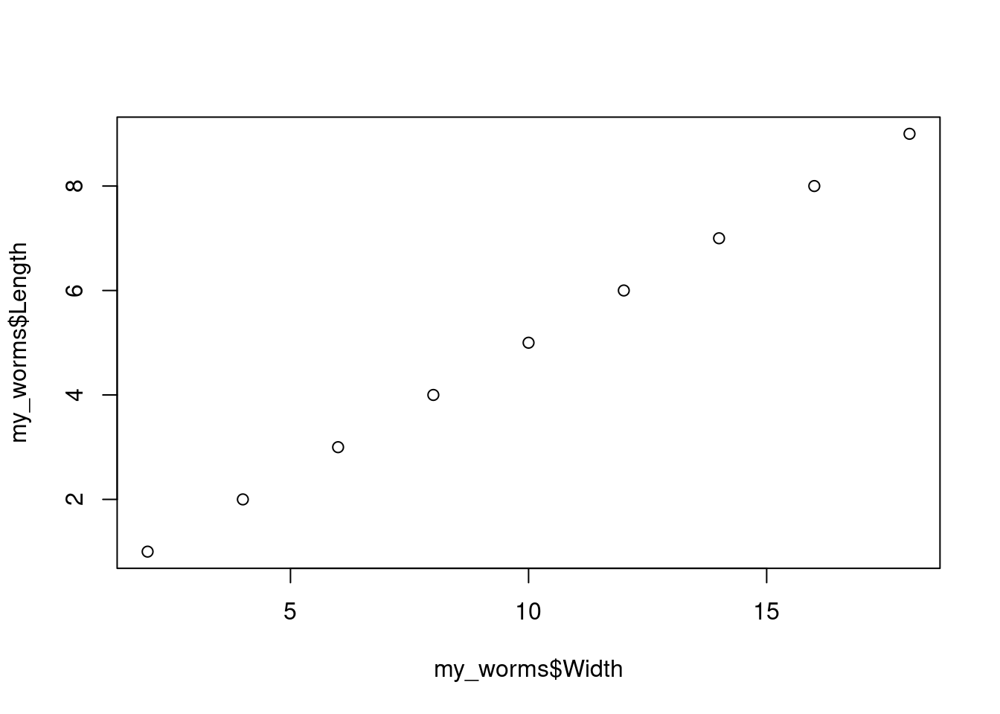
Боксплот — по оси х дискретная величина, по оси y значение непрерывной величины. Черта - медиана, коробка - 25 и 75 персентили, усы - либо размах варьирования, либо 1.5 интерквартильных расстояния (1.5 высоты коробки), если есть “выбросы”.
plot(x = as.factor(my_worms$Colour), y = my_worms$Length)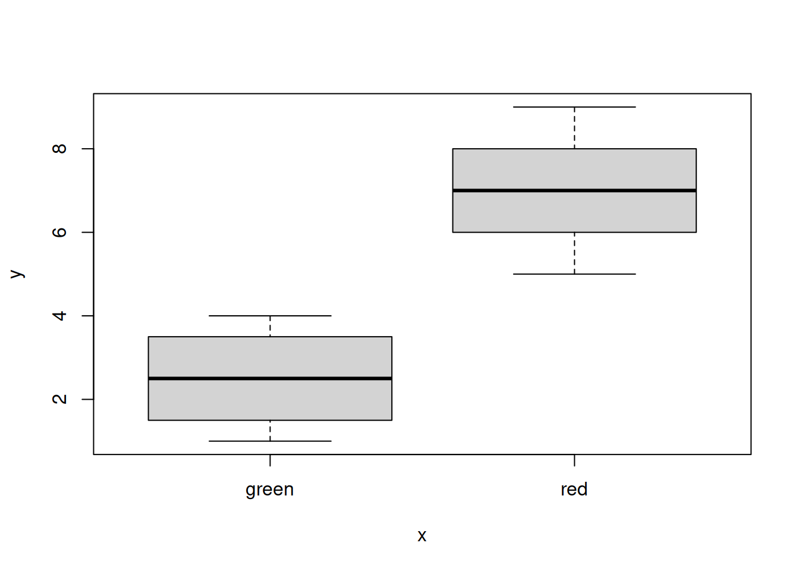
Для настройки внешнего вида см graphical parameters в help
На самом деле, мы не будем пользоваться этой системой графики, но об этом в следующих сериях
В R есть более удобный (но, может быть, более многословный) пакет для рисования графиков — ggplot2. Чтобы использовать функции из пакета ggplot2, нужно его сначала установить.
Установка пакета в локальную библиотеку делается один раз. Поэтому
строку с install.packages() не нужно включать в финальную
версию кода.
install.packages('ggplot2')В текущей сессии работы в R пакет нужно активировать перед
использованием. Когда вы в следующий раз начнете работать с R, нужные
пакеты придется снова активировать. Поэтому строки с загрузкой пакетов
при помощи library() обязательно должны остаться в
финальной версии кода.
library(ggplot2)Нарисуем те же самые графики при помощи пакета ggplot2.
ggplot(data = my_worms) +
geom_point(aes(x = Width, y = Length))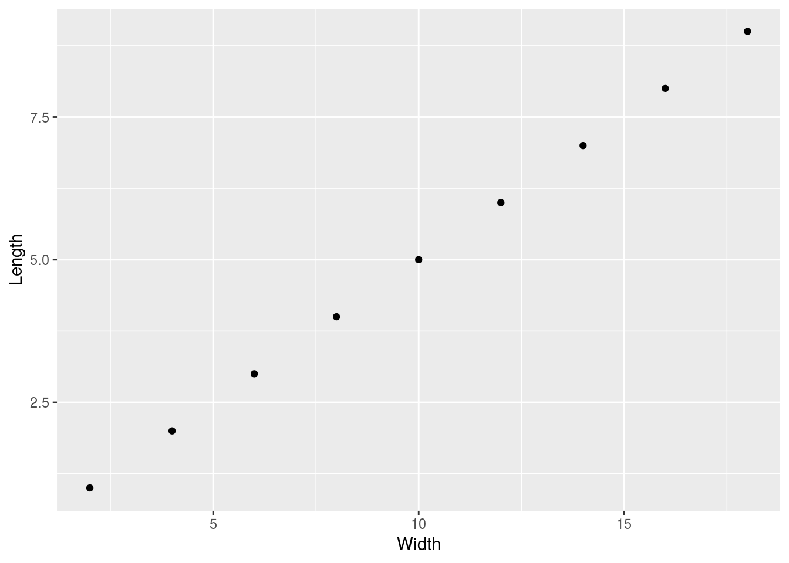
ggplot(data = my_worms) +
geom_boxplot(aes(x = Colour, y = Length))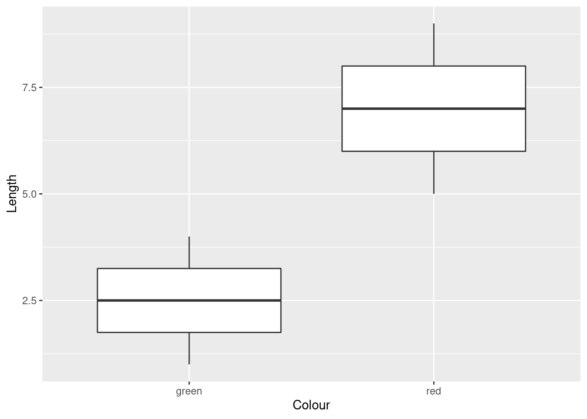
Добавляем для точек эстетику цвет (colour) из переменной Colour
ggplot(data = my_worms) +
geom_point(aes(x = Width, y = Length, colour = Colour))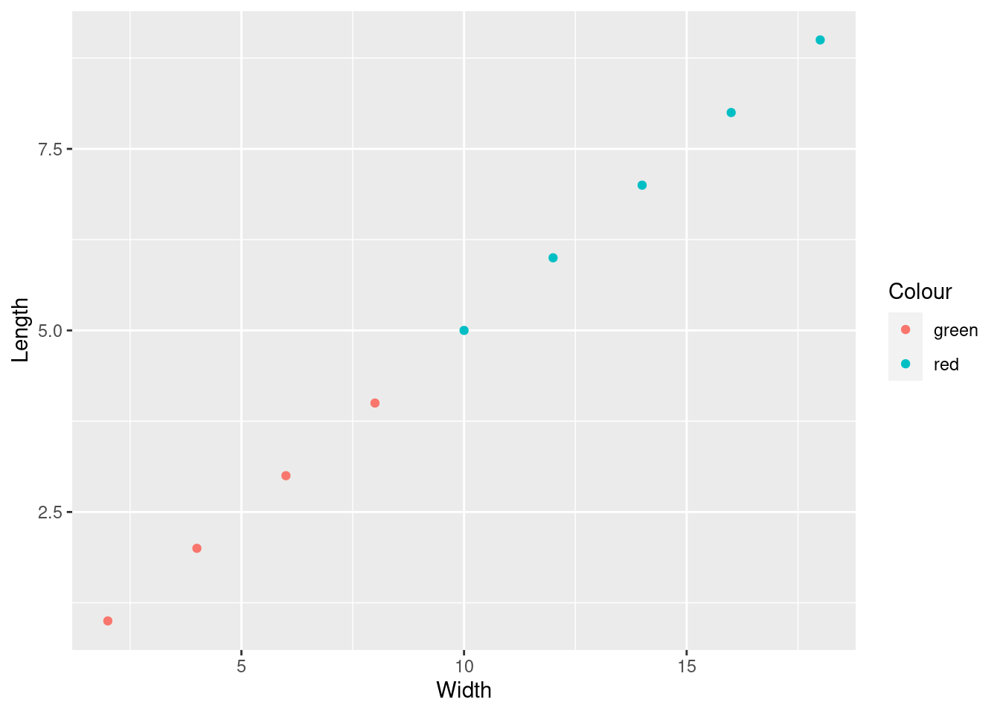
Графики можно сохранять в переменных, и использовать потом
gg <- ggplot(data = my_worms) +
geom_point(aes(x = Width, y = Length, colour = Colour))Чтобы вывести график, нужно напечатать название переменной.
gg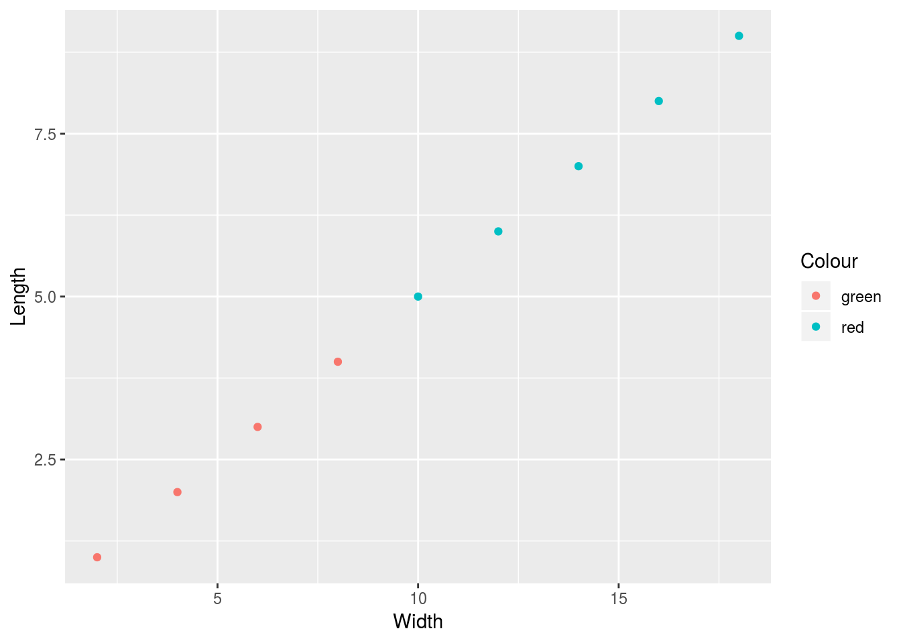
Можно менять темы оформления графика. Если тема нужна только один раз, то прибавляем ее к графику
gg + theme_dark()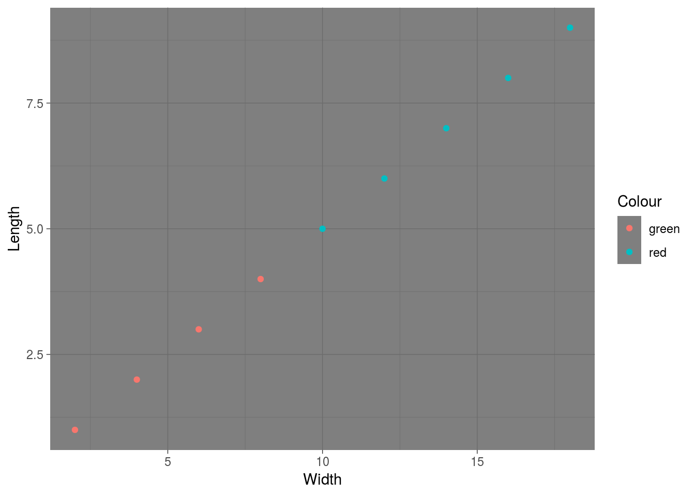
gg + theme_light()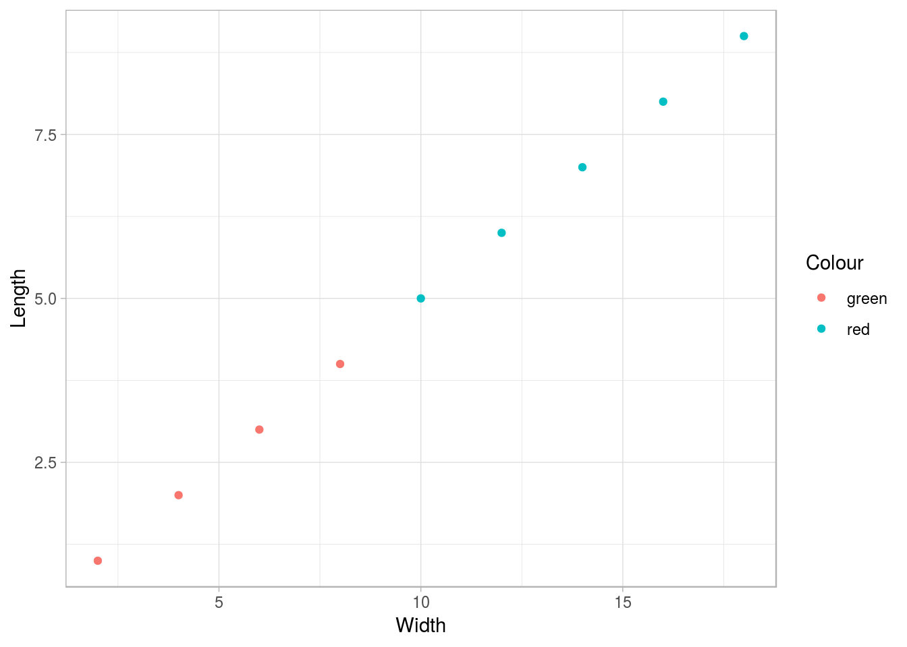
gg + theme_classic()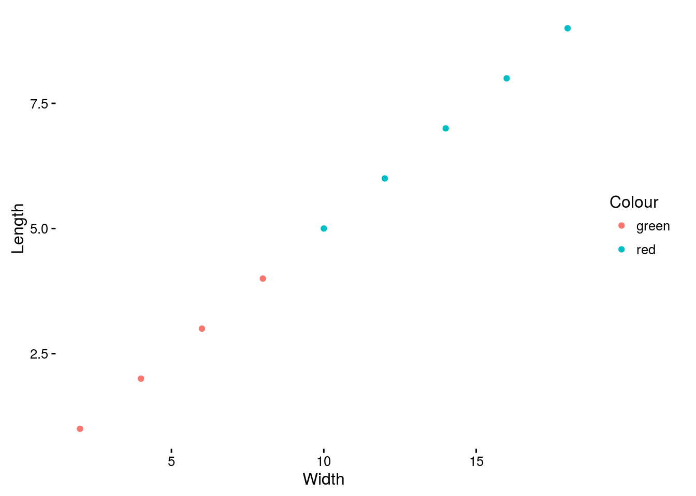
Можно установить нужную тему до конца сессии.
theme_set(theme_bw())
gg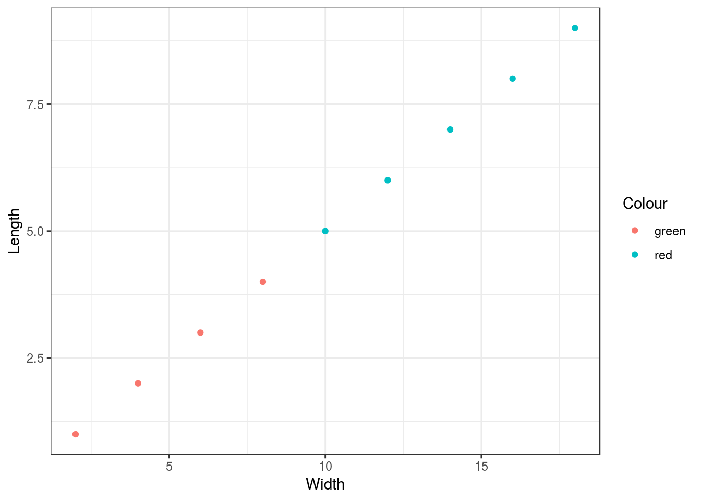
Подписи осей и легенд задает функция labs()
gg + labs(x = "Ширина", y = "Длина", colour = "Цвет")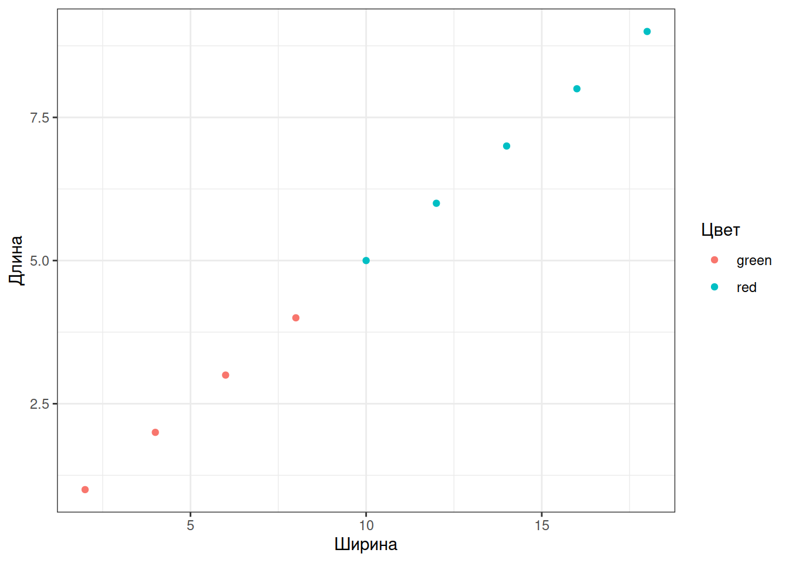
Графики можно делить на фасетки при помощи facet_wrap или facet_grid
gg + facet_wrap(~Colour, nrow = 1)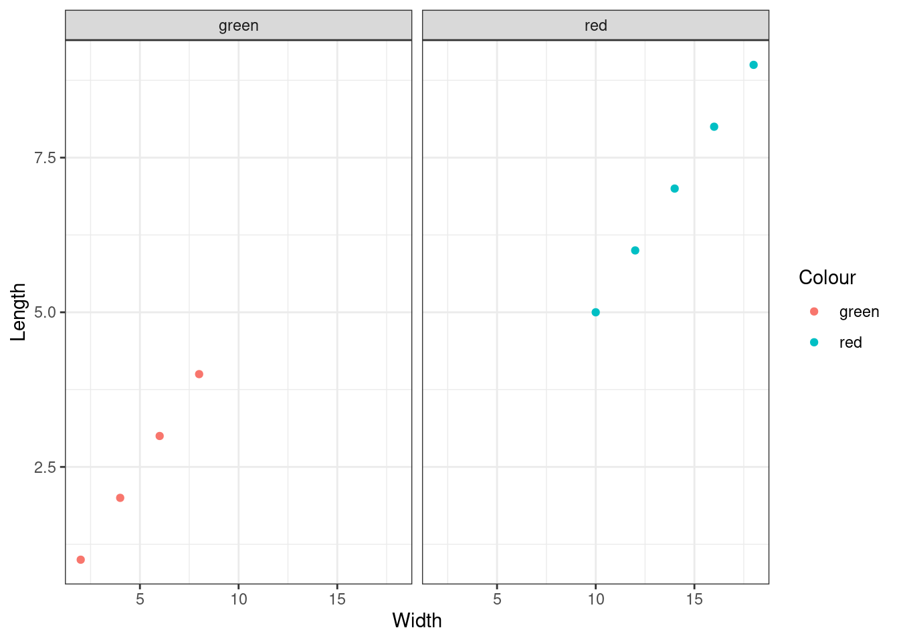
Чтобы изменить подписи цветов, нужно изменить уровни соотв. фактора.
my_worms$col_rus <- factor(my_worms$Colour, levels = c("green", "red"), labels = c("Зеленый", "Красный"))
ggplot(data = my_worms) +
geom_point(aes(x = Width, y = Length, colour = col_rus)) +
labs(x = "Ширина", y = "Длина", colour = "Цвет") +
facet_wrap(~col_rus, nrow = 1)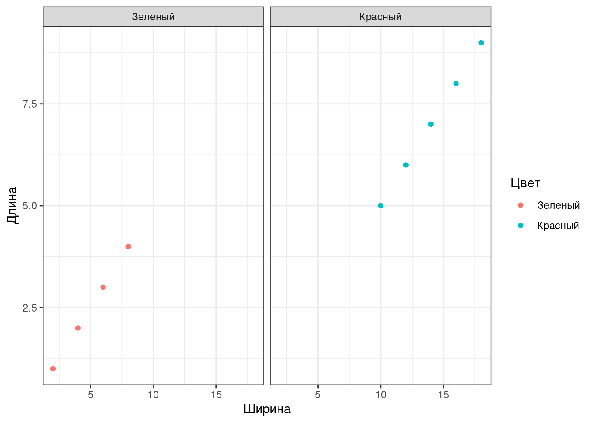